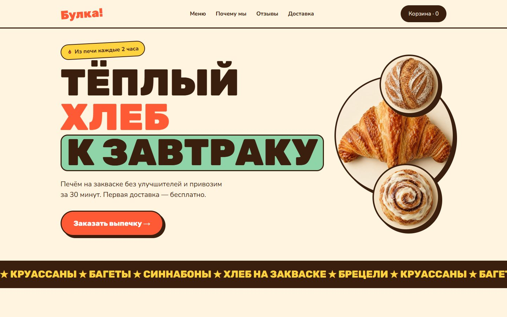
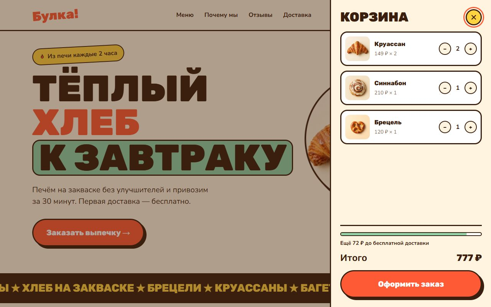
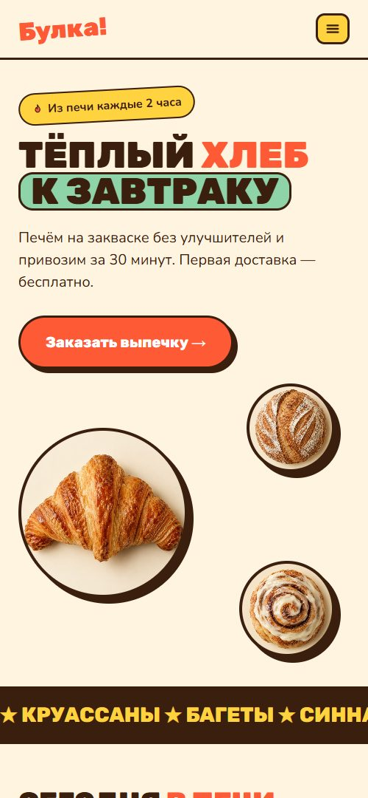

Концепт сайта районной пекарни с доставкой. Бренд говорит громко и по-дружески, а за игривой оболочкой спрятан полноценный путь покупки: от выбора выпечки до оформленного заказа.

Небольшие пекарни продают через агрегаторы и отдают им заметную долю выручки. Собственный сайт обычно выглядит как меню без возможности заказать, и клиент всё равно уходит в приложение доставки.
Нужен сайт, который ощущается как любимое место у дома, и при этом позволяет собрать заказ быстрее, чем открыть агрегатор.
Это концепт-проект: заказчик и отзывы вымышлены, а решения и функциональность — настоящие и работают на опубликованном сайте.
Заказывает с телефона, одной рукой. Нужны крупные кнопки, фото и понятная сумма.
Заказывает на планёрку. Важны количество, итог и порог бесплатной доставки.
Заходит посмотреть, что свежего. Важны время выпечки и часы работы.
Толстые обводки, жёсткие тени и наклонённый стикер поддерживают характер «Булка!» — громкий и тёплый. Стиль не костюм: он же делает кнопки и карточки очевидно нажимаемыми.
Все товары сняты сверху на одном кремовом фоне, поэтому каталог читается как витрина, а не как набор картинок. Эмодзи заменены фото и собственными иконками.
Выезжающая панель сохраняет контекст: посетитель видит каталог, пока меняет количество, и не теряется между страницами.
Полоска «Ещё 112 ₽ до бесплатной доставки» мягко увеличивает средний чек без всплывающих окон.


Сайт свёрстан на чистых HTML, CSS и JavaScript: без фреймворков и сборки. Страница открывается мгновенно и легко переносится на любой хостинг или CMS.